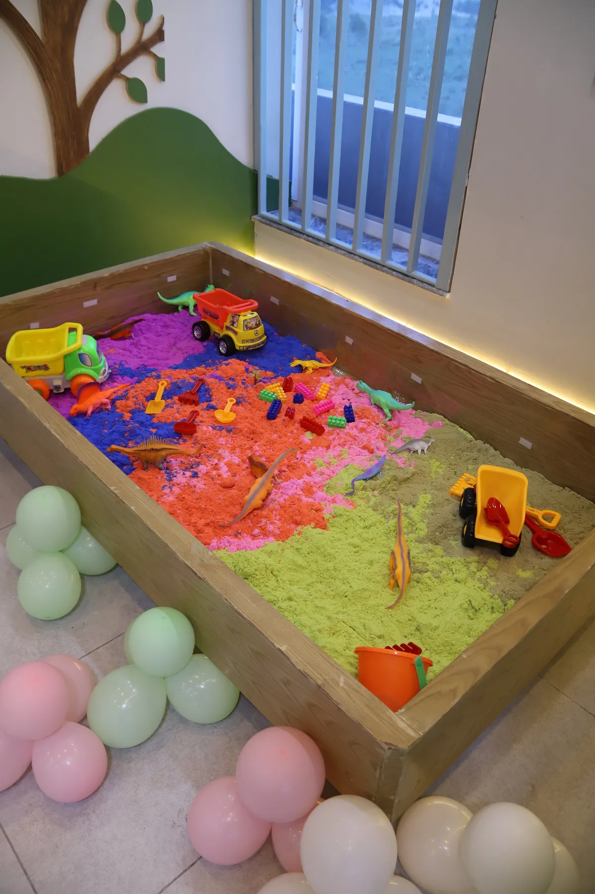
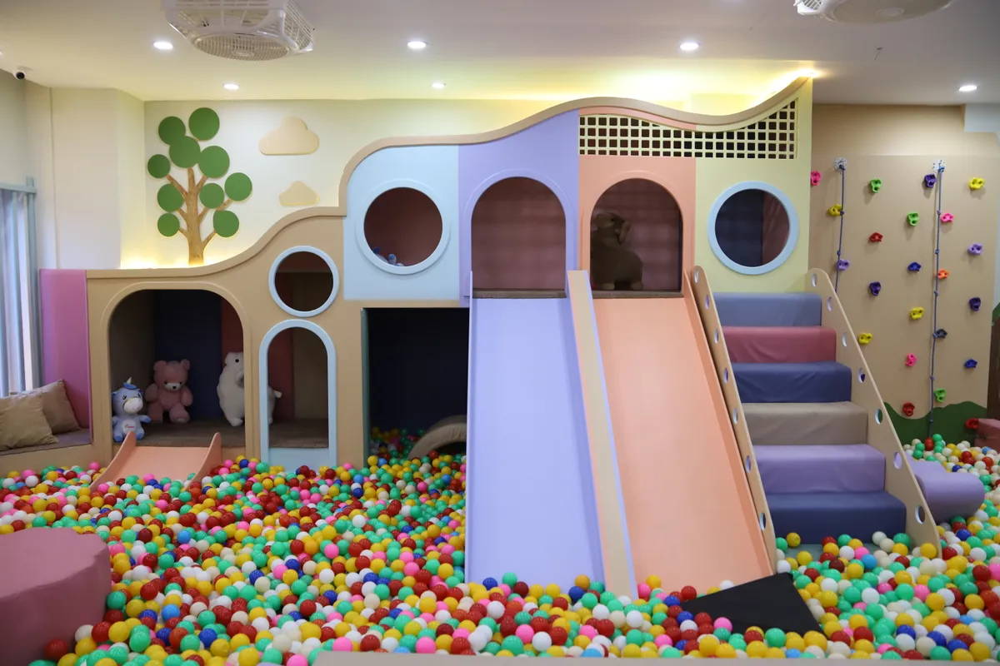
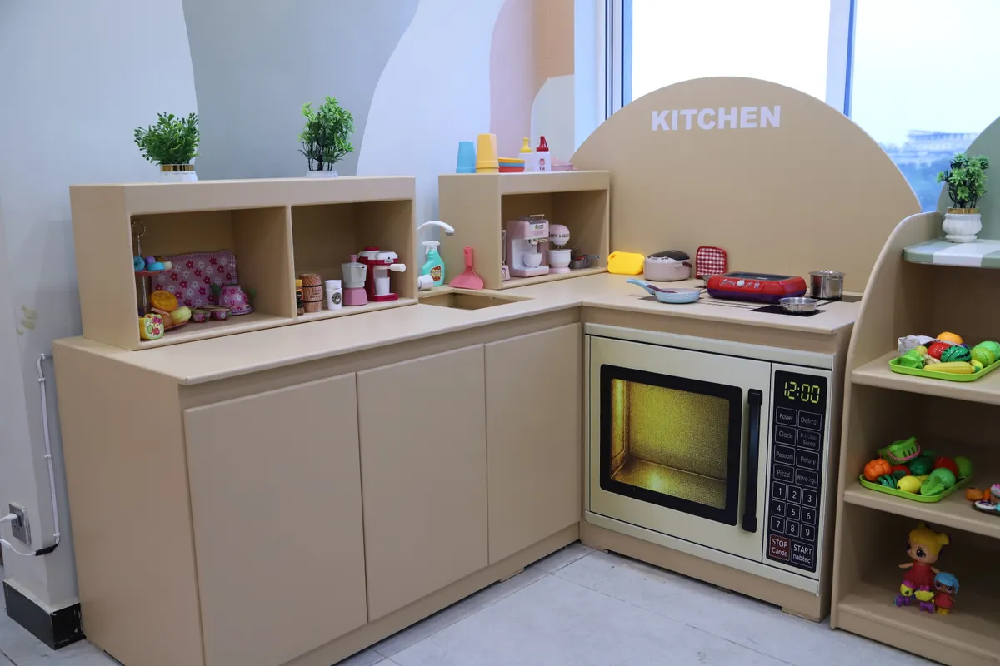

10 Best Things to Do with Kids in Islamabad This Weekend
Friday arrives, kids are restless, and you need a plan. Islamabad has more family-friendly options than most parents realise — but finding what actually works for your child's age and your Saturday schedule takes some knowing. This list covers the 10 best things to do with kids in Islamabad right now, ranked by age suitability and ease of planning.
Why Weekend Planning for Kids in Islamabad Can Feel Difficult
The city's weather is one factor. Summer heat above 40°C, monsoon rains from July to September, and unpredictable winters mean outdoor plans fall through regularly. Add traffic on Saturdays and the limited number of genuinely child-focused venues, and many parents end up defaulting to screen time at home.
The good news is that a growing number of dedicated kids' venues have opened in Islamabad and Bahria Town over the past few years. Here is what is actually worth your time.
1. Little Explorers World — Bahria Town Phase 4
The most complete option for children aged 0 to 10. Located on the 2nd floor of Alpha Marina, Marina Commercial, Bahria Town Phase 4, Little Explorers World has 8 dedicated play zones covering every type of play your child needs.
- Slides and ball pit for high-energy physical play
- Climbing wall with colour-coded holds for different skill levels
- Kinetic sand zone for tactile, creative play
- Sensory room with soft lighting for younger or sensory-sensitive children
- Lego table for building and problem-solving
- Pretend play kitchen and role-play zone
- Latcher board for fine motor skills
- LE Cafe for parents with Wi-Fi, coffee and live CCTV views of the play zones
Open daily 12 PM to 10 PM. No booking needed for a regular visit — walk in and pay at the counter. Birthday party bookings available on WhatsApp.

Plan your weekend at Little Explorers World — Bahria Town Phase 4, Islamabad. Open daily 12 PM – 10 PM.
WhatsApp Us2. Shakarparian National Park
A large, wooded hill park that is far quieter than F9 or Fatima Jinnah Park. Great for a morning walk with kids aged 4 and above. Picnic areas are well-shaded and the views over Islamabad are genuinely beautiful. Bring snacks and a football.
3. Lake View Park — Rawal Lake
Set beside Rawal Lake on the Murree Road, this park offers boating, a bird aviary, kids' rides and wide open grass areas for running. Evenings get crowded on weekends — arrive before 4 PM for a more relaxed visit. Entry is low-cost and parking is available.
4. Dino Valley — Margalla Hills
A prehistory-themed family park with life-sized dinosaur models, gentle rides and a small indoor play area. Best for children aged 3 to 9 who are into animals and adventure. Located just off Murree Road, around 30 minutes from most of Islamabad.
5. F9 Park — Islamabad
The largest public park in the city. Good for cycling, walking, picnics and kids' rides near the main entrance. It gets very busy on Sundays so Saturday morning is the better time to visit. Free entry, paid rides near the fountain area.
6. Rose and Jasmine Garden — Shakarparian
A beautifully maintained garden with over 250 rose varieties and 12 types of jasmine. Calm, colourful and free. Best for children aged 5 and above who can walk without needing to run. Lovely for photography too.
7. Board Game Cafes — F-7 and F-6
A number of cafes in the F-7 and F-6 areas now offer dedicated board game libraries. Good for children aged 6 and above, and especially useful for mixed family groups where adults and kids can all play together. Most charge a per-hour table fee plus food.
8. Pottery and Art Workshops
Creative studios offering pottery, canvas painting and craft sessions for children run on weekends in Islamabad. Check Instagram and Facebook for current schedules — some studios allow drop-ins while others require booking a day ahead.
9. Centaurus or Giga Mall Soft Play
Both malls have small soft play areas near their food courts. These are not full play centres but work well for a quick 30 to 45 minute session while the family is already at the mall for other reasons. Better for children aged 2 to 6.
10. Islamabad Zoo — Margalla Road
One of the more affordable options for a longer outing. Children genuinely enjoy seeing the animals up close. Arrive in the morning before it gets hot, bring water and snacks, and expect to spend 1 to 2 hours. Entry is very affordable for families.

Quick Weekend Activity Guide
| Activity | Best Age | Indoor / Outdoor | Cost |
|---|---|---|---|
| Little Explorers World | 0–10 yrs | Indoor | Hourly |
| Shakarparian Park | 4+ yrs | Outdoor | Free |
| Lake View Park | 3+ yrs | Outdoor | Low cost |
| Dino Valley | 3–9 yrs | Mixed | Paid entry |
| Board Game Cafes | 6+ yrs | Indoor | Per hour |
| Art Workshops | 5+ yrs | Indoor | Per session |
The Easiest Option for Most Families
If you want one guaranteed, weather-proof option that works for every child under 10 without pre-booking or driving far, Little Explorers World is the answer. It is the only venue in Islamabad with 8 dedicated play zones, trained staff, daily sanitisation and a proper parent lounge — all under one roof in Bahria Town Phase 4.
Walk in any day between 12 PM and 10 PM. No appointment needed. For birthday party bookings, WhatsApp in advance to check slot availability.
Frequently Asked Questions
Top options include Little Explorers World indoor play zone in Bahria Town Phase 4, Shakarparian Park, Lake View Park, Dino Valley and board game cafes. Little Explorers World is the best indoor option for children aged 0 to 10 as it has 8 dedicated play zones, trained staff and a parent lounge.
Little Explorers World in Bahria Town Phase 4 is the best option for toddlers. It has a sensory room, kinetic sand, soft climbing and a ball pit — all designed for young children with safety padding and trained staff on site every day.
Yes. Shakarparian Park, F9 Park, the Rose Garden and Fatima Jinnah Park are all free or very low cost for entry. For indoor activities, most quality venues charge an hourly or per-session fee.
Indoor options are best on rainy days. Little Explorers World is open daily including rainy days and provides 8 zones of play, a cafe for parents and a warm indoor environment. Board game cafes and art workshops are also good wet-weather options.